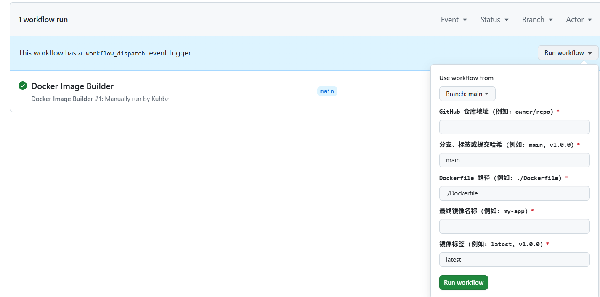
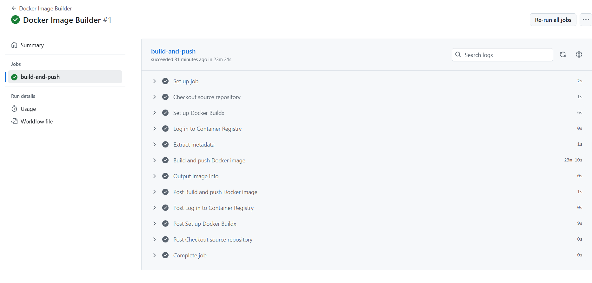
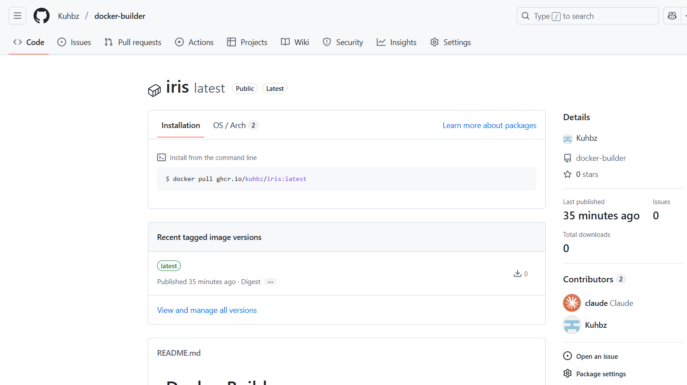

背景
由于国内网络环境的特殊性，使用 docker build 命令构建镜像成为了一件相当困难的事情。尤其是较大的镜像，即使已经配置了代理，仍然极易失败。我已经厌倦了反复处理这类问题，因此想到可以借助 GitHub Actions，让 GitHub 自动帮我们完成镜像的构建。虽然我此前也没有深入使用过 GitHub Actions，但得益于像 Claude Code 和 github-cli 这样的工具，我们完全可以轻松实现这一目标。
前置准备
- 安装Claude Code
- 安装并配置了github-cli
提示词
ultrathink 使用github-cli工具为我建立一个docker-builder仓库，这是对 docker-builder 仓库功能的一个简单、精炼的描述：
""""
docker-builder 仓库是一个中央化的、按需服务的 Docker 镜像构建中心。
它本身不包含任何具体的应用代码，其核心功能是提供一个通用的 GitHub Actions 工作流程，让你可以：
1.手动触发：通过在 GitHub 页面的表单中填写参数，来启动一个构建任务。
2.构建任何仓库：指定任何你有权访问的 GitHub 仓库地址、代码分支或标签。
3.灵活配置：定义要使用的 Dockerfile 路径和最终生成的镜像名称。
4.统一输出：将构建好的镜像自动推送到统一的 GitHub 容器镜像仓库 (GHCR) 中。
""""
下面是github-cli的使用文档:
"""
$ gh -h
Work seamlessly with GitHub from the command line.
USAGE
gh <command> <subcommand> [flags]
CORE COMMANDS
auth: Authenticate gh and git with GitHub
browse: Open repositories, issues, pull requests, and more in the browser
codespace: Connect to and manage codespaces
gist: Manage gists
issue: Manage issues
org: Manage organizations
pr: Manage pull requests
project: Work with GitHub Projects.
release: Manage releases
repo: Manage repositories
GITHUB ACTIONS COMMANDS
cache: Manage GitHub Actions caches
run: View details about workflow runs
workflow: View details about GitHub Actions workflows
ALIAS COMMANDS
co: Alias for "pr checkout"
ADDITIONAL COMMANDS
alias: Create command shortcuts
api: Make an authenticated GitHub API request
attestation: Work with artifact attestations
completion: Generate shell completion scripts
config: Manage configuration for gh
extension: Manage gh extensions
gpg-key: Manage GPG keys
label: Manage labels
preview: Execute previews for gh features
ruleset: View info about repo rulesets
search: Search for repositories, issues, and pull requests
secret: Manage GitHub secrets
ssh-key: Manage SSH keys
status: Print information about relevant issues, pull requests, and notifications across repositories
variable: Manage GitHub Actions variables
HELP TOPICS
accessibility: Learn about GitHub CLI's accessibility experiences
actions: Learn about working with GitHub Actions
environment: Environment variables that can be used with gh
exit-codes: Exit codes used by gh
formatting: Formatting options for JSON data exported from gh
mintty: Information about using gh with MinTTY
reference: A comprehensive reference of all gh commands
FLAGS
--help Show help for command
--version Show gh version
EXAMPLES
$ gh issue create
$ gh repo clone cli/cli
$ gh pr checkout 321
LEARN MORE
Use `gh <command> <subcommand> --help` for more information about a command.
Read the manual at https://cli.github.com/manual
Learn about exit codes using `gh help exit-codes`
Learn about accessibility experiences using `gh help accessibility`
"""剩下的工作交给Claude Code即可，在我的电脑上，Claude Code 一次性地、没有任何报错地完成了这个功能！
效果展示
只要手动填入这些参数即可： 
成功构建了镜像： 

拉取镜像
# 直接拉取
docker pull ghcr.io/kuhbz/iris:latest
# 使用南京大学镜像加速（推荐）
docker pull ghcr.nju.edu.cn/kuhbz/iris:latest